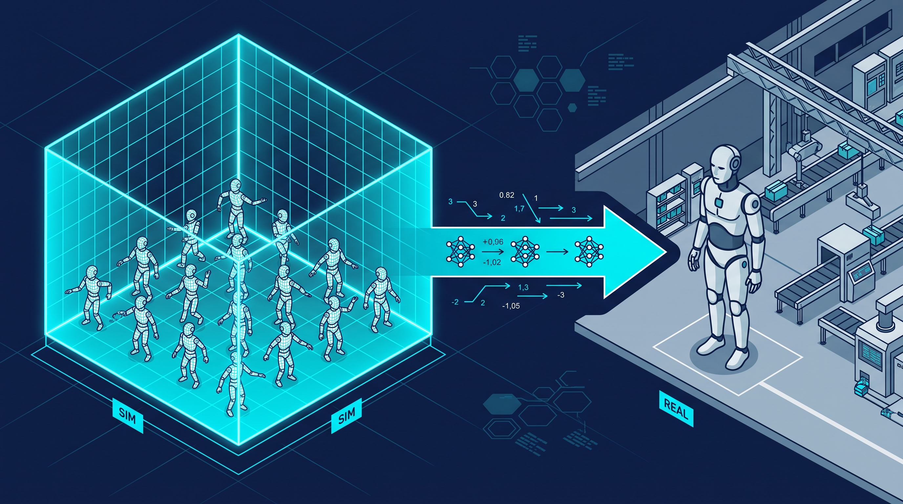
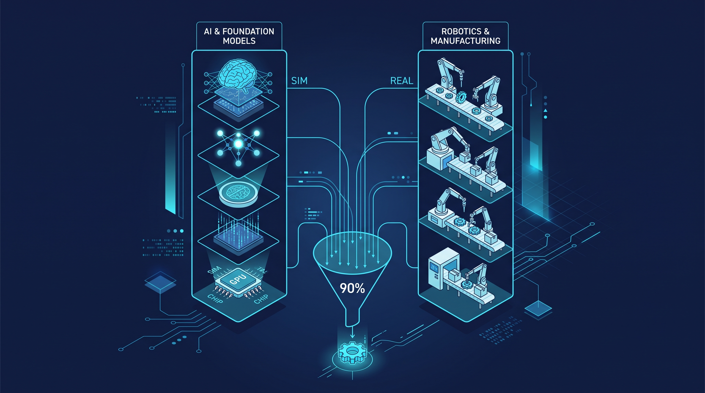

Physical AI Goes to Work: 7,000 Humanoids, Toyota's $6.4B Bet, and the Race for the Physical Substrate
Last year the world shipped about 7,000 humanoid robots for industrial and professional service use, according to the International Federation of Robotics. If you expected a factory floor crowded with tireless metal workers, look again: most of those machines are still pilots running in labs or gathering field data. Roughly three-quarters of Unitree's shipments went not to factories but to universities and research institutes, whose real product is the algorithm training data the robots collect.
That gap between shipment numbers and real deployment is exactly where the next phase of the AI race will be decided. Forecasts see 2026 humanoid shipments topping 90,000 units and reaching 1.2 million per year by 2030, with the embodied-AI robotics market climbing toward tens of billions of dollars. The industry itself is quietly moving the goalposts: the question is no longer "how flashy is the demo?" but "what is your uptime, and what is your task-completion rate?" This article is about that transition — from spectacle to substrate — and the national strategies forming around it.
Toyota's trillion-yen wake-up call
No single announcement captures the moment better than Toyota Motor's plan, reported this month, to invest roughly 1 trillion yen per year — about $6.4 billion — starting in 2028 on automation across its production lines, subsidiaries, and tier-1 suppliers. The target: some 400,000 intelligent robots.
Toyota is not spending that money on a vision video. Its Kamigo plant has already taken a piston assembly line from 3-person teams to fully unmanned operation. At the Higashinihon plant, the 'KumiPro' parts-picking robot uses force-feedback control to correct camera error instantly — the kind of contact-rich manipulation that separates a demo from a production asset. And Toyota Research Institute, together with Boston Dynamics, has demonstrated a single Large Behavior Model (LBM) integrating walking, lifting, sorting, and packing — one policy brain for many physical skills.
Across the Pacific, Hyundai Motor Group is following the same playbook: it plans to deploy next-generation electric Atlas robots at its Georgia Metaplant (HMGMA), beginning with sequencing processes in 2028 and expanding to precision assembly by 2030. The automakers, the companies that industrialized the twentieth century, now intend to industrialize embodied AI.
How the models actually learn: sim-to-real becomes the standard
The technical enabler is the sim-to-real pipeline that has become the industry's default. Thousands of robots train in parallel inside large physics simulations — NVIDIA Isaac Lab, Cosmos world models, Omniverse — and the resulting weights are transferred to real hardware. Simulation gives what the real world cannot: infinite, dangerous, edge-case-rich experience at machine speed.

But the models are improving on the transfer side too. Physical Intelligence, whose publicly shared models have become a reference point, has demonstrated real-world reinforcement-learning policies with sharply improved generalization on open-ended manipulation. Its real-time 'action chunking' algorithm holds precision even under high-latency communication, and its 'FAST' action tokenizer speeds up training fivefold. These are the unglamorous, load-bearing advances — latency tolerance, training throughput — that move systems from lab to line.
Japan is treating this capability as a sovereign asset. METI and NEDO have launched a national project led by Noetra and AIST to secure a sovereign physical-AI foundation model by 2030 — while keeping factory data inside the country. The premise: whoever trains on the richest factory data wins the foundation model for physical work.
The scoreboard nobody wants to look at
China installed 295,000 industrial robots in 2024 — 54% of the global total. In 2025, Chinese firms supplied over 90% of humanoid robot shipments: AgiBot at 5,000+ units, Unitree at 4,200+. And China's MIIT established a humanoid-robot and embodied-intelligence standardization committee in December 2025, meaning Beijing intends to write the rules of the physical layer, not just ship its hardware.
The United States still leads where it has always led: frontier foundation models, GPUs (NVIDIA holds 80–90% share), private capital, and simulation software. But that lead comes with a physical constraint of its own — power-grid bottlenecks for the data centers that train the models. Intelligence is becoming an infrastructure problem.
And then there is the choke point almost nobody talks about. Both the West and China depend on German firms (Bosch Rexroth, Schaeffler) and Japanese firms (THK, NSK) for ultra-precision ball screws and reducers — components that hold roughly 90% of the world market. You can win the model race and still lose the factory floor if someone else makes the joints. Hardware supply chains are a growing risk, and 90% concentration in any market is not resilience; it is a bet.

The real race: from virtual reasoning to spatial intelligence
This is where the columnist Beniamino Irdi, writing for the German Marshall Fund, reframes the entire contest. As he argues, the AI race is splitting away from virtual reasoning — the LLMs — toward 'spatial intelligence' and world models that adapt to friction, error, and contact dynamics. High-level semantic task decomposition can stay virtual. But completing physical work depends on physical data streams from the real world.
Follow the logic to its conclusion: hegemony in the physical-AI era goes not to whoever codes the best algorithm, but to whoever deploys machines at scale in physical environments and continuously recovers operational data to retrain models. The factory is the dataset. Uptime is the moat.
That is why Toyota's trillion yen matters more than any single robot demo. That is why three-quarters of Unitree's machines live in labs collecting data. That is why METI wants a sovereign foundation model and MIIT wants to set the standards. Everyone has understood the same thing: the algorithm era taught us that data wins; the physical era is teaching us that physical data wins, and physical data only comes from machines actually working.
The market, meanwhile, is projecting the steep ramp — analysts put the embodied-AI robotics market on a path to $34.37 billion — and the 90,000-unit year ahead. Whether those machines end up working or watching will be the difference between a bubble and an industrial revolution. The winners will be the ones who measure uptime, not applause.